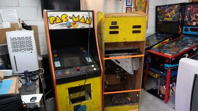
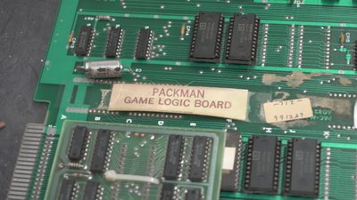
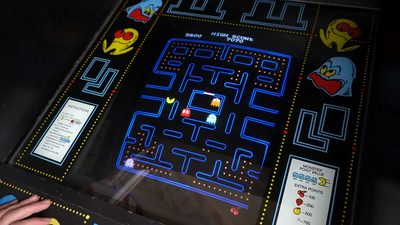

$ cd ~/projects/pac-man
> Pac-Man Restoration_
Aug 2024 - Nov 2024
I restored an original 1980 Pac-Man arcade cabinet from two wrecked ones. One had a decent body with its marquee, bezel and control panel, but no screen, no game board and no coin door. The other was falling apart, but it still held a working CRT screen and the game's circuit board. I moved the good parts of both into the better cabinet and kept everything as original as possible. I made a video about the whole restoration on my YouTube channel Overtinker.
After a thorough clean, I checked the fuses and powered everything up. The game and the screen worked, but the game ran far too fast. The cause was a speed chip (a modified ROM) that operators added. I replaced it with an original one that I burned myself with an open source ROM programmer.
The rest was careful restoration work. I combined the best parts of both control panels, and I sanded, sprayed and riveted the coin door and marquee brackets. The screen had lost its green, which turned out to be a cracked solder joint that I fixed by reflowing it. I kept the old T-molding and the control panel overlay on purpose, as they show the cabinet's age.


